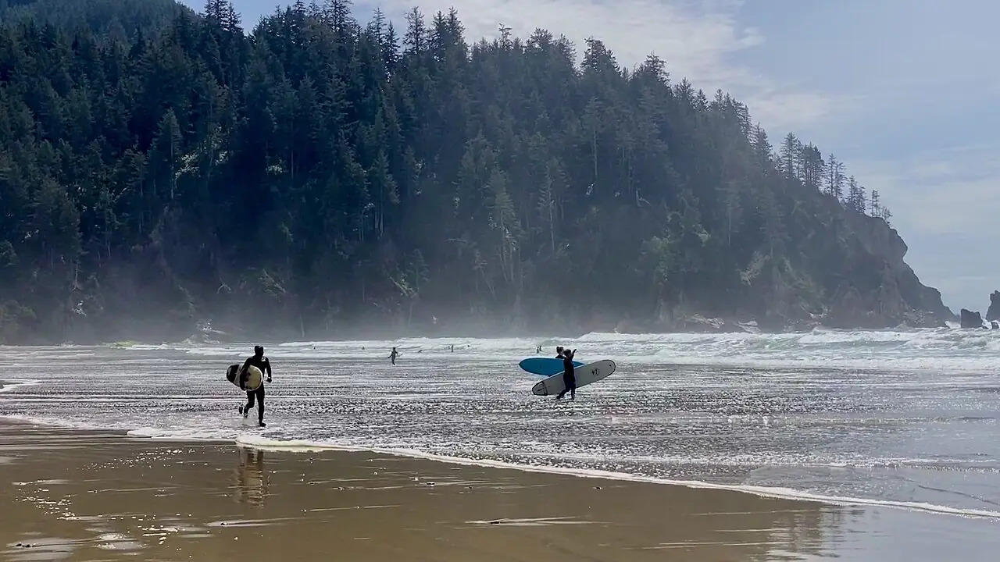

Short Sand Beach — Oswald West
Oregon, États-Unis · surf

Crique encadrée de forêt pluviale dans le parc d’État Oswald West, accessible à pied. Les pointes rocheuses abritent un peu la baie, ce qui en fait l’un des spots de surf les plus fréquentés de la côte nord de l’Oregon.
- Lieu
- Oregon, États-Unis
- Niveau
- Intermédiaire
- Activités
- surf
- Type d'eau
- Mer / océan
- Coordonnées
- 45.76, -123.97 (position approximative du secteur)
Dangers à connaître
- Eau froide du Pacifique nord : combinaison épaisse indispensable.
- Courants d’arrachement près des rochers aux deux extrémités.
- Vagues scélérates (sneaker waves) qui déferlent loin sur la plage.
Le conseil d'Ocean Buddy
Prévois une combinaison épaisse toute l’année et porte ta planche sur le sentier depuis la route 101 : il faut compter quelques minutes de marche.
Ouvrir dans Ocean Buddy Télécharger sur l'App Store
Source : Fiche Ocean Buddy · septembre 2026 · à vérifier localement.